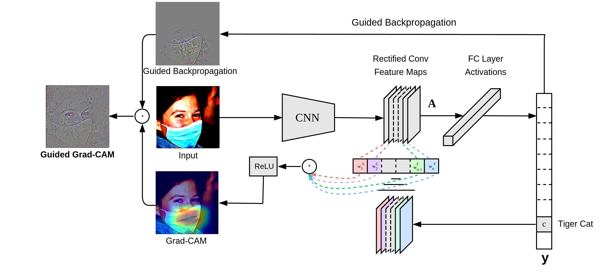
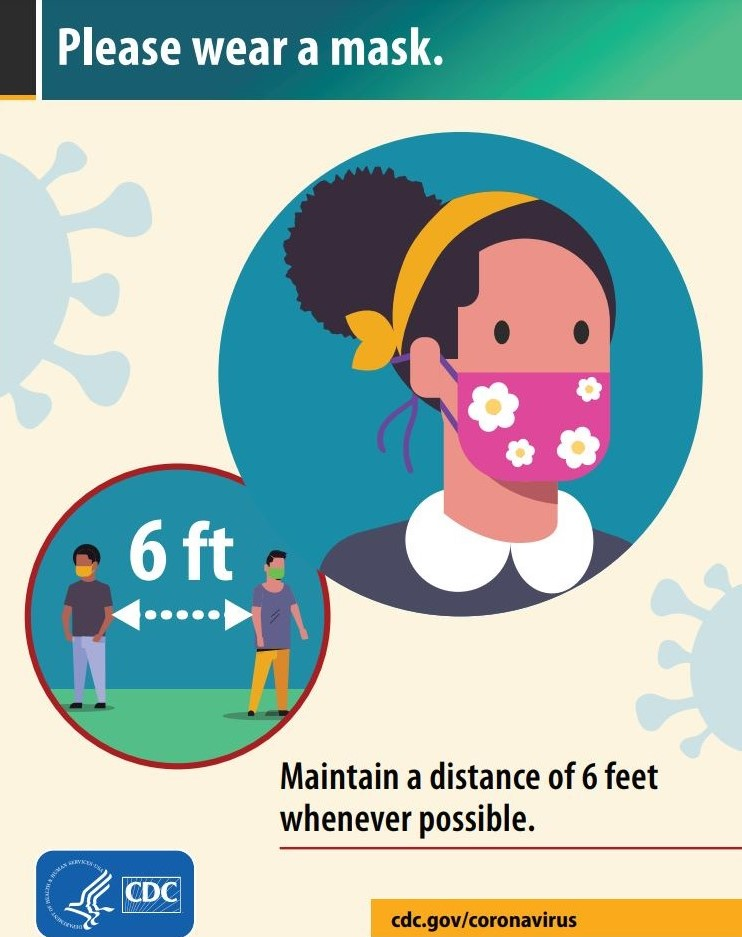

Training Data: MaskedFace-Net
Our training data make our model unique. The current models you could find on the internet
suffer from
Sample Images

Correctly Masked

Incorrectly Masked

Missing Mask
A Reliable Dataset Makes a Good Detector

Dataset Breakdown

Training Set Breakdown

Validation Set Breakdown

Testing Set Breakdown
Our Product
Convolutional Neural Network
GradCam

Intergraded Gradient
Face Mask Detector and Visualization Tool Kit Demo
We prepared three demos for you in this section. Please click on the images below to see the associated ouputs.
Input Image
Conclusion
Our product addressed a current concern shared by people
across the world and point out a common bad habit practiced
by the general public, which is wearing mask incorrectly
and has jeopardized a lot of business. We attempted to
mitigate this issue by creating a face mask detector that
will help business owners comply with laws and ensure the
survival of their business. Moreover, we created the face mask
detector to protect business owners, employees,
and customers' safety and health during the pandemic.
Our approach to building such a
face mask detector is successful and is proven to work in the
intended way. We hope that more face mask detectors can be
implemented so that business owner can survive in this rather
difficult time and that people can protect not only themselves
but also others

User Manual
If you're interested in our product, please visit our github repository.
You can access the Face Mask Detector and Visualization Tool Kit by cloning this repository.
Please follow instructions under the Readme section to set up the working enviornment.
Please contact us if you encountered any issues with installation.
Thank you so much for your interest in our product! Looking forward to hearing your feedback!
GitHub